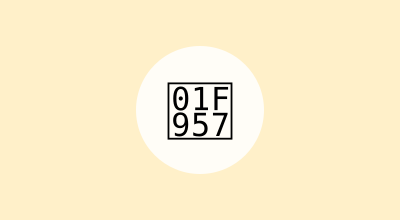

Selamat datang
Berobat lebih tenang,
daftar dari rumah
Klinik rawat jalan di Kota Kediri dengan empat poliklinik. Lihat jadwal dokter dan ambil nomor antrean tanpa datang pagi-pagi.
Empat Poliklinik
Layanan kesehatan lengkap untuk seluruh keluarga Anda



Mengapa Sehat Nusantara?
Kami hadir untuk memudahkan akses kesehatan Anda
Daftar tanpa antre di loket
Isi formulir di ponsel dan dapatkan nomor antrean sebelum berangkat.
Jadwal dokter jelas
Hari dan jam praktik tiap dokter bisa dicek kapan saja, jadi tidak datang sia-sia.
Data pasien lebih akurat
Formulir memeriksa NIK dan nomor HP agar petugas mudah menghubungi Anda.
Jam Operasional
Kami siap melayani Anda setiap hari kerja
| Hari | Jam |
|---|---|
| Senin – Jumat | 07.30 – 17.00 |
| Sabtu | 07.30 – 12.00 |
| Minggu & hari libur | Tutup |
Ingin berobat? Daftar terlebih dahulu secara online.
Daftar Sekarang